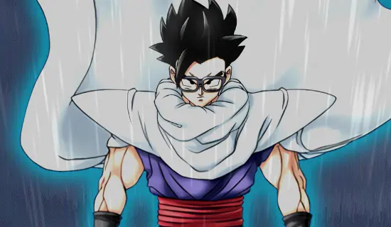

À CRIAÇÃO/ADMNISTRAÇÃO DO SITE:
Gabryel P. (eu mesmo) pela ideia, design do site e criação de cada texto (excluindo participações especiais).
ÀS ARTES DOS PERSONAGENS, EVENTOS, CAMPANHAS E OUTROS:
Créditos e agradecimentos à Akatsuki Inc. e Bandai Namco.
Créditos também à DokkanWiki, DokkanInfo e a Wiki de Dokkan Battle, por tornarem o processo de achar artes e imagens antigas algo mais fácil e acessível.
AOS MEMES E IMAGENS UTILIZADAS QUE NÃO PERTENCEM A MIM:
Toda imagem utilizada foi retirada do Reddit, X (antigo Twitter), Youtube e outras redes sociais na qual Dokkan Battle é mencionado.
Créditos vão totalmente aos respectivos criadores das imagens utilizadas.
Deixo bem claro que NÃO sou dono ou me intitulo criador de nenhum conteúdo utilizado neste site que seja retirado de artistas/editores, reforço assim, que todo crédito é direcionado a eles.
Agradecimentos especiais a Thiago Stick pela produção de algumas imagens no site.